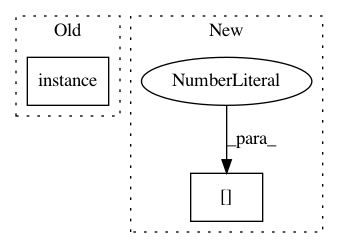

2ae27ec961ae33ec3fc3dd4fa76a6f91771e7c8b,nilmtk/disaggregate/combinatorial_optimisation.py,CombinatorialOptimisation,disaggregate,#CombinatorialOptimisation#Any#Any#,68
Before Change
"device_model": "CO",
"submeter_of": 1,
"data_location": ("{}/elec/meter{:d}"
.format(building_path, meter.instance())),
"preprocessing_applied": {}, // TODO
"statistics": {
"timeframe": total_timeframe.to_dict(),
After Change
cols = pd.MultiIndex.from_tuples([chunk.name])
meter_instance = model["training_metadata"].instance()
if isinstance(meter_instance, tuple):
meter_instance = meter_instance[0] // nasty hack until we fix /롛
output_datastore.append("{}/elec/meter{:d}"
.format(building_path, meter_instance),
pd.DataFrame(predicted_power,
In pattern: SUPERPATTERN
Frequency: 3
Non-data size: 2
Instances
Project Name: nilmtk/nilmtk
Commit Name: 2ae27ec961ae33ec3fc3dd4fa76a6f91771e7c8b
Time: 2014-11-16
Author: jack-list@xlk.org.uk
File Name: nilmtk/disaggregate/combinatorial_optimisation.py
Class Name: CombinatorialOptimisation
Method Name: disaggregate
Project Name: nilmtk/nilmtk
Commit Name: 53c72d947033eb10fe8a41c1266c4ada8e996be3
Time: 2014-07-09
Author: jack-list@xlk.org.uk
File Name: nilmtk/metrics.py
Class Name:
Method Name: error_in_assigned_energy
Project Name: nilmtk/nilmtk
Commit Name: 1305be0d02296ddbf12a67b9ba4b542587e285de
Time: 2014-11-16
Author: jack-list@xlk.org.uk
File Name: nilmtk/disaggregate/combinatorial_optimisation.py
Class Name: CombinatorialOptimisation
Method Name: disaggregate